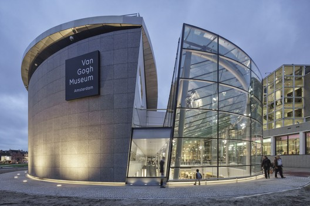

Van Gogh Museum, Amesterdam
The Van Gogh Museum is dedicated to the works of Vincent van Gogh and his contemporary art located in the Museum Square in Amsterdam, close to the Stedelijk Museum, the Rijksmuseum, and the Concertgebouw. The museum opened on 2 June 1973, and its buildings were designed by Gerrit Rietveld and Kisho Kurokawa.
The museum is known for containing the largest collection of Van Gogh's paintings and drawings in the world. In 2017, the museum had 2.3 million visitors and was the most-visited museum in the Netherlands, and the 23rd-most-visited art museum in the world. In 2019, the Van Gogh Museum launched the Meet Vincent Van Gogh Experience, a technology-driven "immersive exhibition" on Van Gogh's life and works, which has toured globally.
